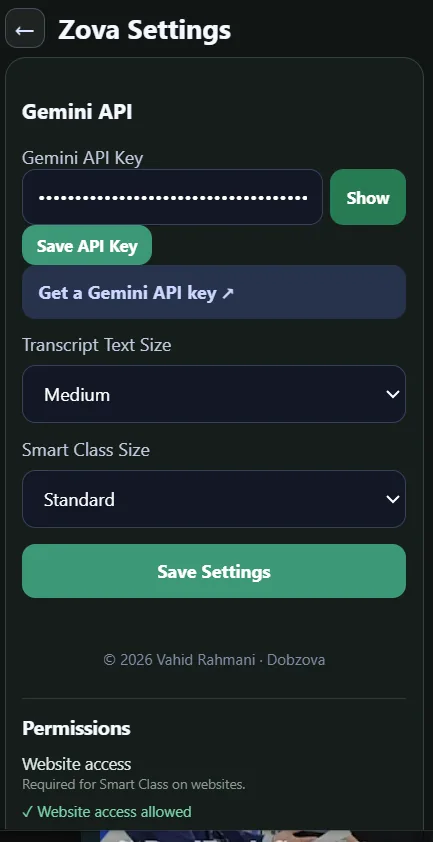

User guide
How to use Zova
From installation to your first saved class.
Learn with Zova
Live translation in 78 world languages.
Zova detects the lesson language automatically, then helps you follow the class with live transcription, translation, optional translated audio and study notes.
100% free to useStart with Google AI Studio
Before your first live session, create your own Gemini API key in Google AI Studio. It is stored locally in Zova.
Open Google AI Studio →Zova is 100% free. Google API limits or terms may apply separately.
From class to saved study notes
Use this visual path to understand how Zova detects, translates and saves your lesson.


Install Zova
Zova will be available from the Chrome Web Store soon. For now, you can install it as a developer or tester using the unpacked extension flow.
- Download or build Zova.
- Open
chrome://extensionsin Chrome. - Enable Developer Mode.
- Choose Load unpacked.
- Select the
distfolder.
Note: this developer installation section can be hidden once Chrome Web Store publishing is complete.
Add your Gemini API key
Zova uses a user-provided Gemini API key for Gemini-powered live processing.
- Visit Google AI Studio.
- Create or copy a Gemini API key.
- Open Zova Settings.
- Paste the key.
- Save it.

The key is stored locally in Chrome extension storage and is not included in class backup files.
Allow website access
When you start Zova on a classroom or video website, Chrome may ask you to allow access to that site.
Zova needs this access to display Smart Class on the selected page and interact with the active session — it lets the classroom view and Zova work side by side.
Start your class
- Open the online lesson or video.
- Open Zova.
- Choose the translation language.
- Press Start.
- Smart Class appears on the page.

Use Smart Class
- Original lesson content appears first.
- Translation appears directly under the corresponding original text.
- The transcript continues as the lesson progresses.
- Text size can be adjusted.
- Smart Class can be resized.
- Smart Class can be minimized and restored.
- Content scrolls inside Smart Class after reaching its maximum display height.

Understand difficult content
When a concept is hard, choose the right tool for the moment.
- Explain — use when a recent lesson concept needs a clearer explanation.
- Answer — use when you need a direct answer based on recent classroom context.
- Summary — use when you want a concise review of recent lesson material.
These actions open Google AI Mode in a compact popup and submit bounded recent classroom context.
Zova does not send your Gemini API key into Google AI Mode.

Optional translated audio
Dubbing (translated audio playback) is optional. You can enable or disable it separately from the rest of Zova.
Turning Dubbing off does not prevent Smart Class, the transcript, Save Class or Auto-Save.

Save your class
A manual Save Class stores:
- Class metadata
- Transcript
- Translations
- Smart Notes
- Supported study data
Saved classes are stored locally using Chrome extension storage. Class saving works independently from Dubbing — you can save without enabling translated audio.

Auto-Save protection
While Smart Class is active, meaningful changes can be automatically saved — so you don't have to constantly press Save.
Review your lessons
The Dashboard is where your saved lessons live. From here you can:
- Open saved classes
- Search your history
- Read original and translated transcripts
- Review Smart Notes
- Adjust text size
- Rename classes
- Delete classes
- Export Markdown
- Manage saved study material

Backup your classes
- Export Backup — downloads a Zova backup JSON containing your saved class data.
- Import Backup — restores compatible saved classes.
Your Gemini API key is not included in exported class backups. Backups are manual — Zova does not perform automatic cloud backups.